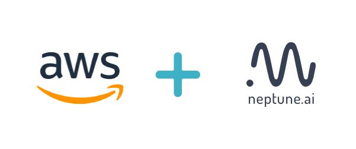
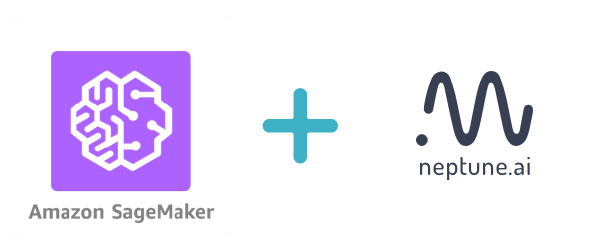

Integrations with AWS and SageMaker
Setting up a Neptune-enabled JupyterLab on AWS
You can run Neptune and track experiments that you run on AWS cloud.
Register to AWS.
Follow the instructions to create your AWS account.
Start an EC2 instance.
Select
ubuntuas your instance type and choose the worker type you need. You can uset2.microjust to test it out.SSH to your instance.
From the terminal, run:
ssh -i /path_to_key/my_key.pem ubuntu@public_dns_name
Make sure that you specify the correct key and public_dns_name.
Install Docker.
Create a new file
install_docker.sh:
nano install_docker.sh
Copy the following commands to it:
sudo apt-get update sudo apt-get install \ apt-transport-https \ ca-certificates \ curl \ gnupg-agent \ software-properties-common curl -fsSL https://download.docker.com/linux/ubuntu/gpg | sudo apt-key add - sudo apt-key fingerprint 0EBFCD88 sudo add-apt-repository \ "deb [arch=amd64] https://download.docker.com/linux/ubuntu \ $(lsb_release -cs) \ stable" sudo apt-get update sudo apt-get install docker-ce docker-ce-cli containerd.io
Run the installation script:
source install_docker.shDefine your secrets.
Go to Neptune, get your NEPTUNE_API_TOKEN and copy it to the clipboard.
Create a password for your JupyterLab server.
Set the following two secrets to your environment variables,
NEPTUNE_API_TOKENandJUPYTERLAB_PASSWORD:export NEPTUNE_API_TOKEN='your_api_token==' export JUPYTERLAB_PASSWORD='difficult_password'
Build the Docker image.
Create a new file
Dockerfile:
nano Dockerfile
Copy insights of the following Dockerfile to your newly created file:
# Use a miniconda3 as base image FROM continuumio/miniconda3 # Installation of jupyterlab and extensions RUN pip install jupyterlab==1.2.6 && \ pip install jupyterlab-server==1.0.6 && \ conda install -c conda-forge nodejs # Installation of Neptune and enabling neptune extension RUN pip install neptune-client && \ pip install neptune-notebooks && \ jupyter labextension install neptune-notebooks # Setting up Neptune API token as env variable ARG NEPTUNE_API_TOKEN ENV NEPTUNE_API_TOKEN=$NEPTUNE_API_TOKEN # Adding current directory to container ADD . /mnt/workdir WORKDIR /mnt/workdir
If you want to run on a GPU, make sure to change your Dockerfile to start from Nvidia Docker images.
Run the following command to build your Docker image:
sudo docker build -t jupyterlab --build-arg NEPTUNE_API_TOKEN=$NEPTUNE_API_TOKEN .
Spin up a JupyterLab server with Docker:
sudo docker run --rm -v `pwd`:/work/output -p 8888:8888 jupyterlab:latest \ /opt/conda/bin/jupyter lab --allow-root --ip=0.0.0.0 --port=8888 --NotebookApp.token=$JUPYTERLAB_PASSWORD
Forward ports via SSH tunnel. Open a new terminal on your local machine and run:
ssh -L 8888:localhost:8888 ubuntu@public_dns_name &
Make sure that you specify the correct public_dns_name.
Open the JupyterLab server in your browser.
Go to localhost:8888.
Enjoy your JupyterLab server with Neptune.
Neptune extensions are enabled and NEPTUNE_API_TOKEN is already in the environment variable so you can work with
Notebooks and run experiments with no problem.
Setting up a Neptune-enabled AWS SageMaker Jupyter instance
You can use Neptune to track experiments that you run on AWS SageMaker.
Register to AWS.
Follow the instructions to create your AWS account.
Create Lifecycle configuration.
Go to SageMaker Lifecycle configurations and click Create configuration.

You can choose whatever name you want – just make sure to remember it.
Modify the Create Notebook script to run it only once at the creation of your SageMaker Notebook instance.
Copy and paste the script below to your Create Notebook tab.
In the PARAMETERS section, choose in which environments you want to install neptune-client.
#!/bin/bash set -e sudo -u ec2-user -i <<'EOF' # PARAMETERS ENVS=( python3 pytorch_p36 ) # Install Neptune client library for env in $ENVS; do source /home/ec2-user/anaconda3/bin/activate $env pip install neptune-client source /home/ec2-user/anaconda3/bin/deactivate done # Install jupyter extension source /home/ec2-user/anaconda3/bin/activate JupyterSystemEnv pip install neptune-notebooks jupyter nbextension enable --py neptune-notebooks --sys-prefix jupyter labextension install neptune-notebooks source /home/ec2-user/anaconda3/bin/deactivate EOF
Create a Notebook instance.
Start Notebook.
If everything went well, your AWS SageMaker instance should have InService status and you can open a Jupyter Notebook or JupyterLab with Neptune Notebook versioning enabled.


{kind=link}
{kind=link}
{kind=link}
{kind=link}
{kind=link}
You can now version your Notebooks and track experiments in Amazon SageMaker with Neptune.